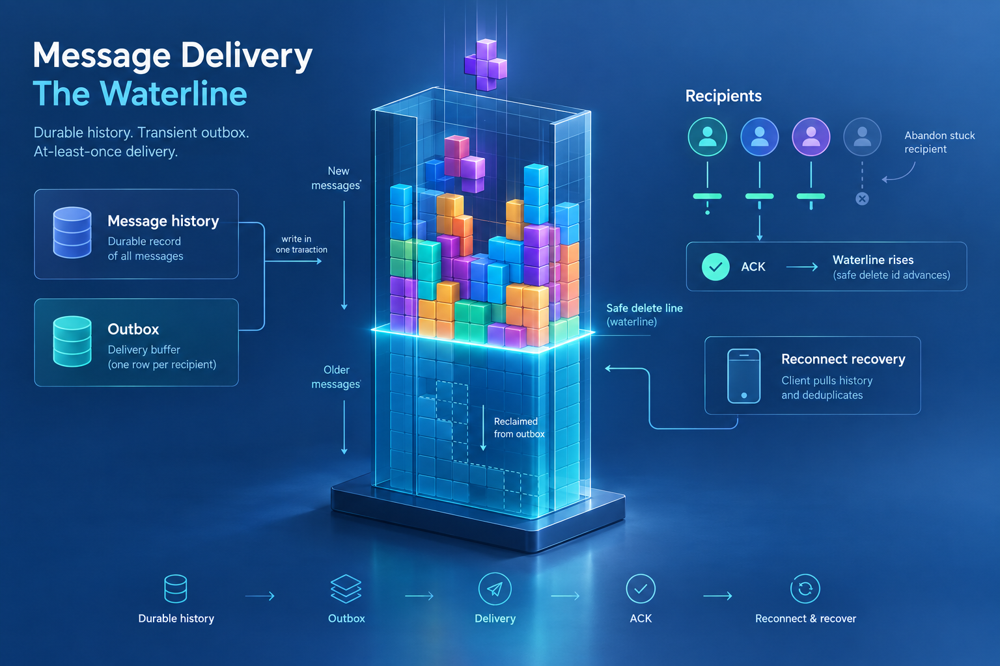

Abstract
Building a compact, fast messenger for small projects is not the trivial task it looks. The bar pulls on every axis at once: a real delivery guarantee; throughput near 2000 messages a second; thousands of connected clients and hundreds of groups; and an instance that never outgrows 1–2 GB of memory. At the centre sits an outbox — one that must run equally on Kafka or on a relational database, be transactionally bound to a durable history, and feed delivery from it. Because the target is deliberately small, the compromises begin there, and they are what this paper is really about: an outbox kept universal by forbidding random reads and using only linear scans (so the backing store can be swapped, Kafka ↔ database, per deployment); and a client made part of the bargain — bounded by credits and request rates, and disconnected outright when it stops acknowledging, at which point the contract obliges it to re-read history on reconnect and deduplicate on its own side. It works — and the thin line between reconnecting clients too eagerly and letting the outbox bloat is the genuinely non-trivial part, tuned to the network, the latency and the business, but a healthy compromise overall. Below: how it works, the Tetris algorithm we built to reclaim the outbox (storage-agnostic — Kafka or database alike), and then the design in full.

A small messenger is a hard messenger
A chat backend for a small project looks trivial until you count what has to hold at once. The requirements pull against each other:
- A real delivery guarantee — no accepted message may be silently lost.
- Throughput ≈ 2000 messages/second — comfortably past any small-project peak.
- Scale in the small — thousands of connected clients, hundreds of groups.
- A tiny footprint — an instance that never outgrows 1–2 GB of memory.
The heart of a design that can meet all four is an outbox: a delivery buffer that runs equally on Kafka or on a relational database, is transactionally bound to a durable history, and feeds delivery from it. But precisely because the target is small, the compromises start at the outbox — and the compromises are the interesting part.
Universality forces a shape. To keep one design portable between Kafka and a database, the outbox forbids random reads and uses only linear scans — so the backing store can be swapped, Kafka ↔ database, to suit a deployment without rewriting the logic. That single constraint — realized by the Tetris reclaim below — is what makes the substrate a drop-in either way.
The client is part of the bargain. The last piece of the compromise is the client itself: bounded by credits and request rates, and — more importantly — disconnected outright when it stops acknowledging (too long, too much, no pings). On reconnect the contract obliges it to re-read history and deduplicate on its own side. And it works.
The genuinely non-trivial part is the thin line between reconnecting clients too eagerly and letting the outbox bloat — a balance struck against the network environment, the latency and the specific business conditions, but a healthy compromise overall. Below we describe how it works — the two stores, the delivery paths, and the Tetris algorithm we built to reclaim the outbox, storage-agnostic across Kafka or a database — and then the design in full.
First, the guarantee stated precisely — in two clauses, because they are different promises:
- At-least-once live delivery — while a recipient is connected, the system keeps pushing a message to its socket until acknowledged.
- Durable eventual recovery — if live delivery is given up on, the message is not lost; it stays in durable history and the client pulls it on the next reconnect (within the retention window).
That distinction is not pedantry — it is the whole design. Live push is best-effort and abandonable; the durable record is what actually guarantees the message. Everything that follows comes from putting those two responsibilities in two different places.
Durable truth and a delivery buffer
Every accepted message is written to two places in a single transaction. message_history is the durable record of what was said, keyed for retrieval by conversation. The outbox holds one row per recipient — a transient instruction that says "this person still needs to receive this."
They are not redundant. History is the truth; the outbox is a to-do list. History is read back by clients on demand and aged out slowly by a retention clock. The outbox is drained aggressively and, ideally, empty. Crucially the history insert runs first and in the same transaction as the outbox insert — a message can never be queued for delivery without already being durably recorded.
That single ordering decision is the backbone of the whole guarantee. Delivery can fail, retry, storm, or be abandoned entirely — none of it can lose a message, because losing a delivery row never touches the history row written before it.
The outbox id is a BIGSERIAL — a monotonic integer, and not incidentally. It is a per-buffer offset, and treating it as one is what keeps this design a rehearsal for Kafka rather than a detour away from it.
Two paths to the socket
A message reaches an online recipient by one of two routes. When the recipient is connected at the moment of send, a fast path hands the frame straight to their WebSocket, decoupled from the persistence write so a slow disk never stalls a live conversation. Everything else — offline recipients, missed sends, retries — is the job of the outbox poller, which wakes on a short interval, claims a batch of the oldest un-delivered rows under a visibility lease, and delivers them concurrently. Oldest-first is a rule, not an optimization: reading the buffer from the bottom up is what makes the waterline meaningful.
A delivered row is not deleted on acknowledgement. It is deleted by garbage collection, and only once everyone below it in the buffer has been dealt with. To see why, look at the waterline.
Tetris, and the safe-delete line
The outbox is one table shared by every recipient, ordered by that monotonic id. Garbage collection is a single, cheap, sequential statement:
# reclaim everything below the global safe-delete line DELETE FROM outbox WHERE id < safe_delete_id;
The whole trick is computing safe_delete_id. In Redis we keep, per connected client, a set of the outbox ids it has been sent but not yet acknowledged. Its pin is the minimum of that set. The global safe-delete line is the minimum pin across all clients. Nothing at or above the lowest outstanding message may be deleted; everything strictly below it is delivered-and-acknowledged for everyone, and can go.
We call the bookkeeping Tetris: rows stack up by id, and the floor rises underneath them as the laggards catch up. A prefix delete against a shared, monotonic id space is about the cheapest reclaim a database can do — no per-row status scan, no random deletes, portable to anything that can express "less than."
The pin is contiguous, by construction
One subtlety decides whether this is correct or catastrophic. A client's pin must reflect its lowest un-acknowledged id — not the highest id it happens to have confirmed. If a client is sent 102, 103, 104 and acknowledges 104 while 102 is still outstanding, the pin must stay at 102. Advancing it to 104 would let GC delete a message the client never received.
The implementation makes this structural: a send adds the id to a per-client sorted set; an ACK removes that specific id; the pin is recomputed as the set's minimum each time. It is genuine set membership, not a high-water cursor — so acknowledging out of order can never lift the floor past a gap.
(ZREM 104) →
One shared minimum is the design's great simplicity — and its one structural weakness.
Because safe_delete_id is a single global minimum, a single stuck recipient holds the line down for everyone. If one online client stops acknowledging — a dead socket that still looks alive, a device wedged mid-reconnect — its pin freezes, the waterline can't rise, and the outbox grows under a floor that won't move. Delivery to every other recipient keeps working; their rows just can't be reclaimed. This is classic head-of-line blocking, and at a shared-id-space scale it is unavoidable by construction.
Reconnect churn vs. outbox volume
We could dissolve head-of-line blocking today with clever Postgres — per-row delete-on-ack, an online-gated fetch skip, sharded pin sets. We deliberately don't. Every one of those is throwaway work that a partitioned log makes irrelevant, and each adds a moving part to the exact subsystem we intend to replace. The rule we hold: keep the reclaim portable — one table, one id space, one sequential delete — and pay elsewhere.
Where we pay is a policy at the delivery edge. When a message has been re-delivered past a small threshold without being acknowledged, its recipient is not "briefly behind" — it is the frozen pin holding down the waterline. So we abandon it. And here is the one point a careful reviewer will stop on: abandoning must not pretend the client acknowledged anything.
It doesn't. Abandon removes the client from the live-delivery set entirely — it deletes the client's whole pending set, drops its count, and removes it from the global-minimum structure — then breaks its socket. The waterline is then recomputed over the remaining clients. This is a withdrawal from live delivery, not a forged acknowledgement:
# abandon = onDisconnect(client) — remove, never a fake pin-advance redis: DEL tetris:re:<client> # the client's whole pending-id set redis: HDEL tetris:re:cnt <client> # its outstanding count redis: ZREM tetris:minids <client> # its pin leaves the global min # safe_delete_id is then re-derived as the MIN over the clients that remain
The abandoned client's un-acked rows do become reclaimable — but that is safe, not lossy, because the message still sits in history and the client pulls it on reconnect (§05). Breaking one stuck socket lets the floor rise for everyone.
the balance
A tighter drop keeps the outbox small but forces more reconnects; a looser drop tolerates a bigger buffer to spare the churn. This is the design's central dial, and it is an anti-stall lever, not a waterline lever: it doesn't move the floor by acknowledging anything — it removes the stall so the floor can move on its own.
before — stuck client pins the floor
withdraw from live delivery
(not an ACK)
after — floor recomputed over the rest
Three guards, one goal
The abandon is one of three independent reapers, each firing on a different signal:
- Idle reaper — closes sockets that stopped answering pings. Signal: silence. It clears zombies.
- Overload reaper — drops a client whose un-acknowledged backlog exceeds
max-pending. Signal: depth. A count-based guardrail. - Attempts drop — the primary anti-stall lever. Withdraws the recipient of a message re-delivered past
max-delivery-attempts. Signal: staleness of the oldest outstanding row.
They run in parallel on different clocks and never conflict; a client can trip two at once and the second withdrawal is simply a no-op.
The grace question — measured, not assumed
The obvious refinement is a reconnect-grace window: don't abandon a client that only just reconnected — give it a moment to catch up before judging it. We built the knob and measured it. Under sustained load it is counter-productive: a client that can't keep up now won't keep up in another second either, and the grace window merely delays the inevitable withdrawal while the poller re-delivers its un-acked rows in the meantime — a re-delivery storm that inflates both the buffer and the churn it was meant to reduce. So grace defaults to zero. The knob survives for the case it actually helps: a transient blip at low load, where a healthy client hiccups for under a second. Under saturation, aggression wins — because the recovery path is cheap.
Three guarantees, not one
It matters exactly what "guaranteed" means here, because the honest answer is three different promises at three levels — and conflating them is how a design like this gets oversold.
- G1 — durable acceptance. Once the server accepts a message it is in history, committed. This is the real server-side guarantee, and it is unconditional.
- G2 — at-least-once live delivery, while eligible. As long as a recipient stays connected and healthy the system keeps pushing until acknowledged — but it may abandon that push (a stuck or vanished client), and then live delivery stops.
- G3 — recovery. After an abandon or a disconnect, the message is recovered by the client pulling history on reconnect — for as long as it stays inside the retention window.
The server guarantees durable acceptance, not uninterrupted live delivery. Abandoning a delivery is not acknowledging the message — it changes the delivery mechanism from push to pull.
So the precise claim is not "every message arrives." It is: no accepted message is ever lost, and it remains recoverable for the retention window — whether a client ultimately receives it depends on that client reconnecting. Everything below rests on five invariants, each verified against the implementation (the transactional SQL, the Redis Lua behind the watermark, the recovery query, the retention config).
Every outbox row has a corresponding durable history record.
History and outbox are inserted in one transaction, history first. No delivery row exists without its record.
An outbox row is reclaimable only after its recipient acknowledged it — or was explicitly removed from live delivery. Never a faked pin-advance.
ACK = remove one id from the pending set. Abandon = DEL / HDEL / ZREM the client. No path advances a pin to a higher score.
Removing a recipient from live delivery never removes the message from history.
Abandon touches only presence + Redis + the offline nudge. Outbox GC deletes only from outbox. History has its own clock.
History retention bounds the recovery window: a client recovers messages within the documented 90-day window.
History 90 days (frozen contracts 365) ≫ the outbox backstop of 26 hours. A message a client returns for within 90 days is always still there.
Recovery order rides a durable database sequence, never the ULID identity.
Pagination orders by message_history.id (monotonic BIGSERIAL); the client's ULID cursor is resolved to it server-side. A non-monotonic identity can never reorder or skip a message.
One residual we name honestly, and one we closed. (1) The GC in-flight window. Between a row's insert and its first delivery it is physically present but not yet pinned; in the empty-watermark fallback the safe-delete id could cross it. A 5-second grace on the reclaim (never delete a row younger than the longest insert-to-send latency) bounds this, and the crash-consistency rebuild below backstops it — but a grace is a bounded mitigation, not a proof; the airtight form is to pin at persist, which we measured as buying nothing at our latencies and deliberately left uncoded. (2) The connection-epoch gap — now fixed. The abandon path once keyed its watermark and socket-close on the client id alone, so a stale verdict decided against one socket could execute after the client had reconnected — tearing down the new connection's bookkeeping. It never cost data (history recovers it), but it was a genuine concurrency-correctness gap in the live model, and reachable precisely because abandon itself provokes the reconnect that opens the next generation. The fix turned out simpler than a protocol revision: the epoch is the connection object. Single-active-session evicts the old socket before registering the new one, so a superseded connection vanishes from the registry the instant its successor arrives — and "is the generation I decided against still current?" collapses to "is this exact connection still registered?". Abandon now no-ops — skipping both the watermark advance and the close — when the connection it was deciding against is gone, and closes only that one connection otherwise. No new Redis key, no client-contract change; validated in production across tens of thousands of reconnects at 2000 msg/s with the delivery ratio pinned at 1.0.
G1 — acceptance is durable before anyone is told
The sender's ACK and the live fast-path both fire after the history+outbox transaction has committed — the inbound pipeline runs persist → ack → hand-off in strict order, and the persist stage only completes when its group-commit batch has committed. So an ACK, or a message a recipient sees live, is already durably recorded: there is no window where a client holds a message the server never accepted. Commit precedes delivery, not the other way round.
G3 — recovery is client-pull, and safe to abandon into
With acceptance durable, abandoning a recipient is safe by construction. Its outbox rows get reclaimed, but the messages sit untouched in history. Recovery is client-pull, not server-push: on reconnect the client asks its conversation for everything since the last id it saw —
GET /api/chats/{chatId}/messages?since=<last-seen-id>
The cursor is scoped to the conversation and ordered by the durable per-message database sequence (message_history.id, a monotonic BIGSERIAL) — not by the message's ULID. The client still passes its last-seen messageId (the ULID is the message's identity, and the client's dedupe key); the server resolves that to its sequence position and pages from there. Ordering therefore never depends on a random identifier being sortable — it rides the one thing the database already guarantees to be monotonic. The server never has to hold a delivery open, and the buffer is free to drain. This is what makes the abandon cheap, and cheapness is the whole reason we can afford to be aggressive with it.
The cursor is also fail-safe: a last-seen id the server can no longer resolve — purged past retention, or a fresh reinstall with no cursor at all — coalesces to the beginning, so the query returns a full conversation backfill (bounded by retention and the page limit) rather than ever silently skipping. Recovery degrades to a full sync, never to a gap; the client pages it and dedupes by messageId. Think of the cursor as a conversation-local logical position backed by a global physical sequence, not a global cursor the client reasons about.
identity is not order
Two questions, two mechanisms — never conflated. Identity ("which message is this?") is a ULID messageId, minted at acceptance, carried on the wire, unique without coordination, the client's dedupe key. Order ("what is its position in the log?") is always a database sequence: outbox.id for the delivery buffer and its Tetris watermark, message_history.id for durable pagination. The one bug a review caught here was ordering recovery by the identity — a plain ULID is only approximately chronological, so two messages in the same millisecond could sort out of order and a cursor could skip one. The fix was not a new counter; it was to stop asking the identity to do the sequence's job.
Redis is an index, not a source of truth
The waterline lives in Redis, and the reclaim deletes from Postgres — so it is fair to ask what happens when the two disagree. The answer is that the Redis Tetris state (pins, minids, lastid) is a rebuildable index over the durable outbox, never the truth. On process start a cold-state wipe clears a primed flag, so the first GC pass reconstructs the entire watermark from a full scan of the physical outbox (SELECT recipient_id, id FROM outbox → rehydrate) before it computes any safe-delete id or issues a single DELETE; and a Redis read error in that window deletes nothing (the pass recovers to zero). So a Redis flush, a fresh instance, or a cold restart cannot make GC over-delete — the floor is rebuilt from Postgres first. The honest limit: this covers every Redis loss that also loses the primed flag; it does not cover a Redis that silently drops pending data while keeping primed=1 without a restart (a stale-replica failover), which needs a restart to re-trigger the rebuild. That is the one Redis↔Postgres consistency edge we do not yet close automatically.
Offline recipients — the outbox is work, not an obligation
This is the reframe that makes the whole model click. The outbox is not "messages this person is owed" — it is live-delivery work in progress. A pin exists only for a connected client, so an offline recipient holds nothing down: its rows become reclaimable and may be garbage-collected while it sleeps. "What stops Bob's outbox rows from vanishing while he's offline for ten hours?" — nothing, by design. The obligation lives in history (durable truth); the outbox merely records an attempt to deliver live. Offline delivery is not a queue that drains later — it is a recovery that Bob pulls from history when he returns, which is why G3 and retention matter and the outbox's own expiry never does.
Duplicates are expected — dedupe by id
At-least-once means a client can legitimately receive the same message twice: once via live push and again via reconnect-sync, or twice from a lease re-claim. It is designed for, not an accident: the live fast-path is a pure optimization that takes no lease or flag on the outbox row, while the poller stays authoritative — it claims by lease (FOR UPDATE SKIP LOCKED) and will re-deliver even a fast-delivered message until the recipient's ACK clears it from the watermark. Every delivered frame carries a stable server ULID (messageId) plus the sender's original id (correlationId), and the same identifiers appear on the history copy. So the client contract is explicit: deduplicate by messageId across live delivery and history synchronization. Recovery without dedupe would manufacture the very duplicates it exists to prevent.
The clearest signal (not a proof)
Held under load, one ratio best exposes re-delivery pressure: deliveries per accepted message. Near 1.0, the delivery path runs with little re-delivery pressure and the buffer stays bounded; climbing toward 2, the system is re-delivering — the waterline is stuck and the poller is churning. It is a health signal, not a correctness proof: 100 accepted / 100 delivered could still hide one message lost and another sent twice. The actual proof of no-loss is reconciliation — a load run that reconciles every accepted message against what each recipient received (live plus history-sync), which is how the invariants above were validated. Reconnects, meanwhile, are the honest cost of the clients that genuinely fell behind.
outbox_oldest_age is the one to alarm on: depth 100k at 30 ms is fine; depth 100 at 8 minutes is a fire.History outlives every recovery window
Because an abandoned or offline recipient recovers only from history, one invariant is non-negotiable (I4): history must live longer than the longest time a client could plausibly be away before reconnecting. Get this wrong — let history expire while an un-delivered outbox row still exists — and a returning client finds nothing. The margin here is deliberately enormous.
History (90 d) outlives the outbox backstop (26 h) by ~83×. A client can be gone for weeks and still recover.
Every queue, and what it is for
Throughput at this shape is not one dial; it is a set of bounded buffers, each protecting a stage from the one before it. The design keeps them explicit and separately tunable rather than hidden behind a single thread pool.
| Buffer / batcher | Setting | Job |
|---|---|---|
| inbound queue | 8000 | Backpressure on accept. Over the limit, a send is shed as "overloaded" rather than swallowed. |
| inbound persist-batch | 36 / 5 ms | Group-commit: coalesces concurrent history+outbox writes into batched transactions to fill an otherwise idle DB pool. |
| outbound batch-size | 6000 | Rows the poller claims per poll. Sized to match the inbound gate so delivery is never the narrower pipe. |
| outbound queue-size | 8000 | Backpressure on delivery; the poller skips fetching while the queue is non-empty. |
| claim-lease | 10 s | Visibility timeout on a claimed row — set it well above the P99.9 delivery→ACK latency, or the poller re-claims still-acking rows and manufactures duplicates. |
| delivery-concurrency | 32 | Concurrent WebSocket deliveries, on both the fast path and the poller. |
| fast-delivery queue | 8000 | The live hand-off buffer; sheds to the poller when full. |
| read-batch | 64 / 10 ms | Group-commit of read receipts — the same coalescing trick, for a lower-value write. |
| max-pending | 20 | Overload-reaper threshold. Below ~20 it reaps healthy clients and manufactures churn. |
| max-delivery-attempts | 3 | The anti-stall threshold — the primary abandon lever. |
| outbox-retention | 26 h | Age-based backstop: a disk safety net if the waterline ever stalls despite the reapers. |
What the load campaign settled
The configuration above is not folklore; it is what survived a sweep. Six hundred clients messaging each other pairwise at a sustained two thousand messages a second — well past any real peak — with every knob moved in isolation and the run reconciled message-by-message.
| Configuration | deliver / send | outbox | verdict |
|---|---|---|---|
| grace 0 · pending 20 · lease 10s | 1.00 | bounded, drains to 0 | holds 2000 one-to-one |
| grace 0 · pending 20 · lease 20s | 1.56 | ≈165k, poor drain | lease too long → re-claims |
| grace 1s · pending 20 · lease 10s | ~1 | bounded | more reconnects |
| grace 3s · pending 9 · lease 20s | 2–4 | ≈162k, no drain | storm |
| grace 10s | 2.96 | unbounded → 355k | collapse |
The lesson repeats down the table: anything that delays the abandon — grace above zero, a lease longer than the GC cadence, a pending cap so low it reaps the healthy — trades a bounded buffer and a 1.0 ratio for a re-delivery storm. One honest caveat: the lease result is empirical, not a law. The principle is lease ≫ P99.9 delivery-to-ACK latency; at our latencies 10 s satisfied that and 20 s interacted badly with the GC cadence — measure your own percentiles before copying the number.
A rehearsal for the log
Every decision here was made with one eye on the thing we haven't built yet. The outbox is a partitioned log drawn in a relational table; the BIGSERIAL is a global log-position analogue (not yet a per-partition offset — partitioning by recipient is what turns it into one); the Tetris waterline is a consumer's committed position.
At that point the global head-of-line block does not vanish so much as change shape: with per-partition offsets there is no single cross-key minimum to freeze, so a laggard can no longer hold everyone's floor down — but the pressure reappears as per-partition lag and the hot-recipient / hot-partition problem, now a Kafka operational concern rather than a global stall. The reconnect churn we pay today does ease — a slow consumer resumes from its committed offset rather than being dropped and told to resync — but that is a trade of one failure mode for a better-understood one, not a free lunch.
But we are careful about the word "mechanical." The semantic mapping is close to mechanical — the roles line up almost one to one. The operational model is not: producer idempotence, transactional writes, partition count and hot recipients, consumer-group rebalance, offset-commit ordering, a consumer crash between processing and commit. The model transfers cleanly; the operations are a project of their own.
Until then, we keep the buffer honest: one table, one waterline, an aggressive abandon, and a durable history to fall back on.